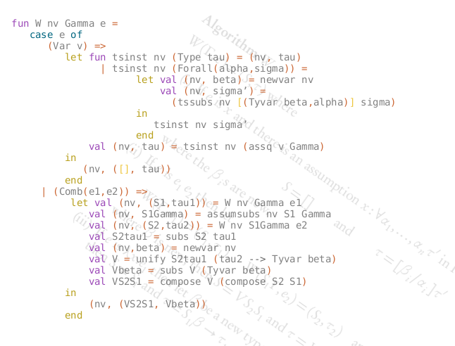

Robin Milner's type system with parametric polymorphism was a significant advance over the systems of Russell and Church. Arguably it is the ability to use type-variables that makes higher order logic a practical vehicle for proving non-trivial theorems. The Hindley-Milner algorithm is used to automatically infer types in theorem provers and in several other functional programing languages.
The algorithm, the type system, and some of the logical background are explained in this tutorial, along with an implementation in standard ML.

This implementation is purely functional and is intended to show the algorithm as clearly as possible. The image above is meant to show that functional languages can be used to express mathematics and logic in such a way that the correspondence between the mathematical and the programmatic expressions may be as exact as one wishes.
This has practical consequences. In implementing the algorithm in ML I found several errors and ambiguities in the mathematical expression. These were cleared up in the process of constructing the mechanical expression of the algorithm. The errors would have been detected by the syntax and type-checking of the compiler, and the ambiguity is resolved by the specification of standard ML semantics which is more precise than any informal description of mathematical notation that I have ever seen. Because ML is equally expressive but more exact, I argue that the ML program is a a better description of the algorithm than the mathematical one.
Standard ML is Milner's language which uses this parametric polymorphic type system. The core of the implementation of the type inference algorithm consists in some 250 lines of code. It does not include any explicit type annotation at all, yet the type of each and every expression is inferred (and thereby checked) by the same algorithm which is part of the compiler.
The algorithm was proved sound and complete by Damas and Milner in 1982 and the proof is outlined in Principal type-schemes for functional programs which I have re-keyed because the paper is so well-written and deserves to be more widely read.
The source code is available as a plain text SML source file and as html formatted standard ML.